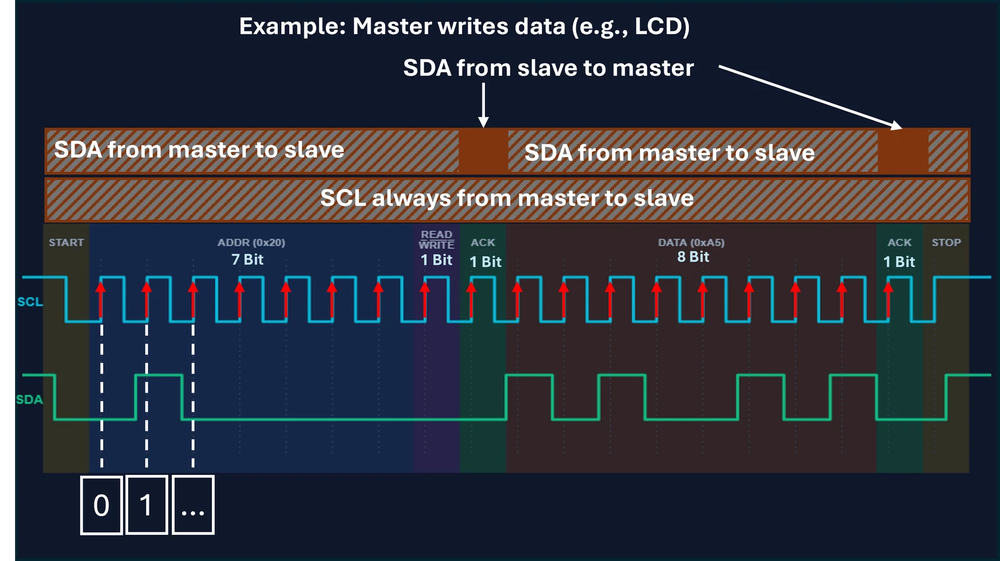
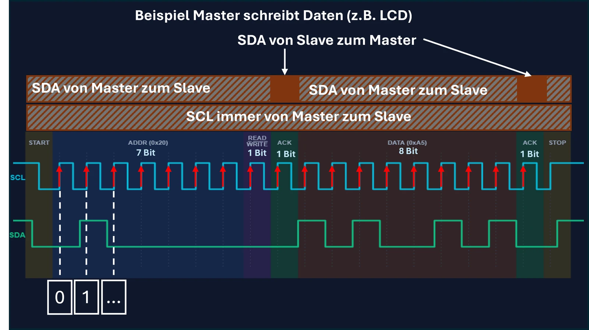

The protocol: communicationDas Protokoll: Kommunikation
I²C works on the master/slave principle. Only the master (your microcontroller) generates the clock (SCL) and starts the communication.
I²C arbeitet nach dem Master/Slave-Prinzip. Nur der Master (Ihr Mikrocontroller) erzeugt den Takt (SCL) und startet die Kommunikation.
Edges as triggers for readingFlanken als Trigger zum Lesen
How do the ICs on the bus know when a bit is valid? The I²C bus uses edges as triggers: the data line (SDA) is read exactly when the clock line (SCL) changes to HIGH (rising edge). After that, SDA must not change while SCL remains HIGH. SDA may only change again once SCL drops to LOW.
Wie wissen die ICs am Bus, wann ein Bit gültig ist? Der I²C-Bus nutzt dafür Flanken als Trigger: Die Datenleitung (SDA) wird immer genau dann gelesen, wenn die Taktleitung (SCL) auf HIGH wechselt (steigende Flanke). Danach darf sich SDA nicht mehr ändern, während SCL auf HIGH bleibt. SDA darf sich erst wieder ändern, sobald SCL auf LOW abfällt.
Important for the exam:Wichtig für die Prüfung:
This also means that the state of SDA may only change while SCL is LOW. If SDA changes while SCL is HIGH, this is not interpreted as a data bit, but as a START or STOP condition!
Das bedeutet auch, dass sich der Zustand von SDA nur ändern darf, während SCL auf LOW liegt. Ändert sich SDA, während SCL auf HIGH ist, wird das nicht als Datenbit, sondern als START- oder STOPP-Bedingung interpretiert!


1
START
The master pulls SDA LOW while SCL is still HIGH. This wakes up all slaves on the bus: “Attention, a message is coming!”
Der Master zieht SDA auf LOW, während SCL noch HIGH ist. Das weckt alle Slaves am Bus auf: „Achtung, eine Nachricht kommt!“
2
ADDR
The master sends a 7-bit address. Each Visionary Display has its own address (default is 0x27). Only the addressed slave keeps listening.
Der Master sendet eine 7-Bit-Adresse. Jedes Visionary Display hat eine eigene Adresse (Standard ist 0x27). Nur der aufgerufene Slave hört weiter zu.
3
READ / WRITE
The 8th bit determines the direction of communication: it specifies whether the master writes data to the slave (0) or reads from it (1).
Das 8. Bit bestimmt die Kommunikationsrichtung: Es legt fest, ob der Master Daten an den Slave schreibt (0) oder davon liest (1).
WRITE (0):master sends to slave (e.g. text for the LCD).Master sendet an Slave (z. B. Text für das LCD).
READ (1):master receives from slave (e.g. reading a sensor value).Master empfängt vom Slave (z. B. Sensorwert abfragen).
4
ACK
The slave replies with an acknowledge bit (ACK = LOW) if it has understood the address or data and is ready to communicate.
Der Slave antwortet mit einem Bestätigungsbit (ACK = LOW), wenn er die Adresse bzw. die Daten verstanden hat und zur Kommunikation bereit ist.
Error case (NACK): if the slave does not understand the data or cannot be reached, the SDA line stays HIGH (1) due to the pull-up resistors. This state is called NACK (not acknowledge). The master notices this and aborts the transmission.
Fehlerfall (NACK): Versteht der Slave die Daten nicht oder ist er nicht erreichbar, bleibt die SDA-Leitung durch die Pull-up-Widerstände auf HIGH (1). Diesen Zustand nennt man NACK (Not Acknowledge). Der Master bemerkt das und bricht die Übertragung ab.
5
DATA
The actual payload (e.g. a command or text for the display) is sent byte by byte. Each byte is followed by another ACK.
Die eigentlichen Nutzdaten (z. B. ein Befehl oder Text für das Display) werden byteweise gesendet. Nach jedem Byte folgt erneut ein ACK.
6
STOP
At the end, the master releases SDA while SCL is HIGH – the pull-up resistors pull the line back to HIGH. This officially frees the bus again.
Am Ende gibt der Master SDA bei HIGH-SCL frei – die Pull-up-Widerstände ziehen die Leitung wieder auf HIGH. Damit wird der Bus offiziell wieder freigegeben.
Live oscilloscope simulatorLive-Oszilloskop-Simulator
Send a character to our display and watch the bus.
Senden Sie ein Zeichen an unser Display und beobachten Sie den Bus.